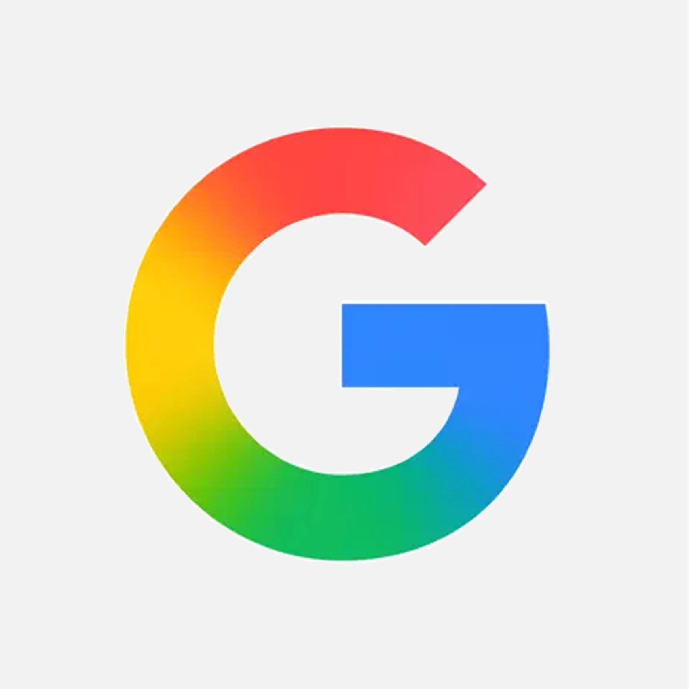
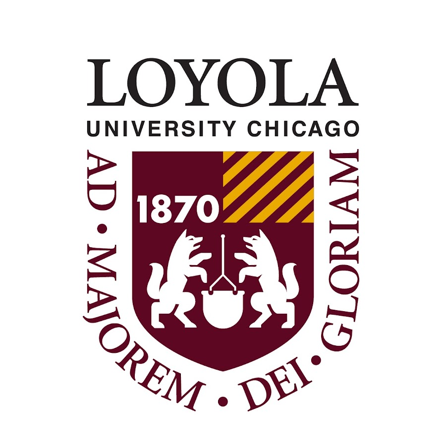

Google ASDI Intern

I was an Associate Software Developer Intern at Google in Summer 2025.
Accomplishments:
- Designed and implemented a user-facing feature for the Android Phone App's Calling Card for over 600 million daily active users and over 7 billion daily calls.
- Engineered (end-to-end) a transformative feature used for Android's production code, working closely with UX designers and tech leads to iteratively develop a positive user experience.
- Gained proficiency with multi-threaded applications, data services, and state management, as well as navigating internal tools and Google's 2 billion line codebase.
- Created an internal API accessible across the Android Phone App's teams that will make it easier for applications to support accessibility for Android's ~800 million color blind and low-vision users.
Research Intern (LUC)

I was a research intern at Loyola University Chicago the summers after my sophomore and senior years of high school. Accomplishments:
- I developed a Flask web application allowing researchers to evaluate and optimize the efficiency of their computer vision models on a cluster of low-powered devices, facilitating resource-constrained AI development for the eventual goal of running artificial intelligence on phones.
- I contributed to a published research paper on the security risks of popular machine learning model hubs such as HuggingFace, bringing awareness to the risks of open-source artificial intelligence.
- I evaluated and presented a comparative analysis of leading Python charting libraries, assessing ease of use and visual appeal to guide optimal tool selection for scientific data visualization, which led to changes in the lab's charting methods for their research papers.
Chrome Support Intern

I was an intern at my high school's Chromebook help desk from 2021 to 2024.
Responsibilities:
- Delivered front line customer support within the school's central help desk to support students and staff with their Chromebook computers.
- Checked in/out loaners and customer devices coming in/out of repair.
- Diagnosed and performed troubleshooting on out-of-warranty Chromebooks.
- Performed technical repairs through software updates and replacement of major parts including batteries, screens, keyboards, motherboards, and other modular components.